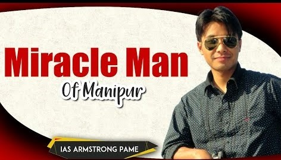

Armstrong Pame
is an officer in the Indian Administrative Service (IAS). He belong to Zeme speaking group of Zeliangrong community from Manipur.
Pame who hail from Tamenglong district of Manipuris India’s Most Eminent IAS Officer Award ’2015 awardee.
After completing his bachelor's degree from St. Stephen's College, Delhi in 2005 he appeared for the Civil Services Examination (CSE) in 2007 and got Indian Revenue Service (IRS) in Custom and Central Excise department. After clearing the UPSC exam in 2008, he was selected for Indian Administrative Service (IAS). He is not only acclaimed but has earned the sobriquet ‘Miracle Man’ for building a 100 km road famously known as the "Peoples' Road" connecting Manipur to Nagaland and Assam.
In August 2012, he raised Rs. 40 lakh for this purpose through Facebook page.[9] For his efforts in building road with donation and volunteers he was invited to Facebook headquarters in California
In 2012, he was nominated for CNN-IBN Indian of the Year in Public Service category.[11] Pame was also invited to the talk show Aaj Ki Raat Hai Zindagi (AKRHZ) by the host Amitabh Bachchan in 2015 as the 'hero' of the 9th episodeOn the show which was aired on Star Plus he could be seen performing the noted song Give Me Some Sunshine along with the Bollywood actor Boman Irani. Armstrong Pame is also the founding curator of the Global shapers Community, imphal hub under the world economic forum. He is now declared as young Global Leader of the class of 2018 as declared by the World Economic Forum